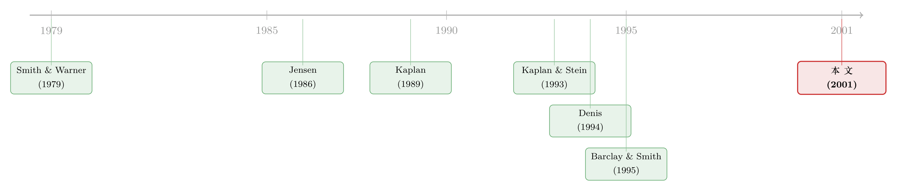

债，是用来「逼」老板的——可如果有人替你盯着，还需要逼吗？
本文读的是 Cotter & Peck (2001, Journal of Financial Economics)：在 64 桩 1984–1989 年的杠杆收购里，当「收购专家」（如 KKR）握有过半股权时，交易反而用了更少的短期、优先债、也更不容易陷入财务困境；而且对这类交易，把债的条款收得更紧并不能显著提升业绩——但对其余交易却能。结论是：收购专家亲自盯着管理层，替代了「用紧债条款逼管理层」这件事。
1 先把那根「大棒」说清楚
谈杠杆收购（leveraged buyout, LBO），绕不开 Jensen。
他在 1986 年那篇名文里讲了一个后来被反复引用的比喻：LBO 是一套「胡萝卜加大棒」的机制，专门用来治自由现金流 (free cash flow) 的代理病。胡萝卜，是管理层的持股大幅上升，钱袋子和公司绑在了一起，于是肯卖力气；大棒，则是为收购这家公司而背上的那笔巨债——还本付息的压力像一根鞭子，逼着经理人把公司经营得井井有条，否则就是违约、破产、丢饭碗。于是高杠杆带来的好处，盖过了它附带的更高破产成本与代理成本。（关于自由现金流这套逻辑的来龙去脉，可参见《现金为什么一定要「还」出去？——四十年后，重读 Jensen 的自由现金流》。）
到这里，故事似乎很完整：借得越狠，管理层被逼得越紧，公司就越值钱。
但 Cotter 和 Peck 在文章一开头就拎出了 Jensen 论证里一个常被忽略的细节。Jensen (1986, p. 324) 真正强调的，不是债务的总量，而是每期的还本付息额 (debt service payments per period)。这句话一旦当真，整个画面就变了：真正在「逼」管理层的，是债的结构，不是债的多少。
于是一个很自然的问题浮出来：什么样的债，鞭子抽得最响？
2 债的「松紧」，藏在期限和优先级里
作者给出的答案是两个维度——期限 (maturity) 和优先级 (seniority)。
先说期限。短期债意味着每期要还的本金更多，债务服务的压力更密集，管理层必须在 LBO 的早期就把现金流挤出来。所以短债 = 紧。
再说优先级。私募的、优先的银行贷款，比起公开发行的次级债（也就是垃圾债, junk bonds），更可能在贷款协议里塞满限制性条款 (restrictive covenants)；而且私募债主更愿意贴身盯着管理层，远不是那些只替公众债券持有人挂个名的受托人 (trustee) 可比。所以优先 = 紧。
把这两件事量化，是这篇文章的第一份手艺活。作者构造了一个平均优先级 (average seniority) 指标：把八类债按优先级从高到低赋权（最高的银行债与过桥融资记 5 分，次级债记 1 分），再按金额加权平均。
直觉很干净：这个数等于 5，说明这桩 LBO 全靠最优先的银行债撑起来；等于 1，则全是次级垃圾债。数越大，债越「紧」，鞭子越响。平均期限的算法类似——把未来每年的本金偿还按到期年份加权，再除以总债务。作者还顺手验证了一件符合直觉的事：所有期限指标和所有优先级指标之间，都统计上显著负相关——私募优先的银行债往往短，公开的次级债往往长，与 Gilson & Warner (1996) 的发现一致。
到这一步，作者手里有了一把能量出「债到底有多凶」的尺子。
3 关键的一步：债不是唯一的「监工」
接着，一个真正关键的问题出现了。
债能逼管理层，但债不是唯一能逼他们的人。出钱的第三方股权投资者，本身就可以盯着管理层。如果有人能用相对低的成本主动监督经理人，那么「用债来监督」的边际价值就下降了——毕竟破产成本和债务代理成本，最终都要从这些股权投资者的回报里扣。用债去监督，是要付学费的。
而收购专家 (buyout specialist)，比如 KKR、Citicorp Venture Capital、Kelso，恰恰是那个有比较优势的监督者。他们专做高杠杆公司的治理，监督管理层比别人更在行；而且他们是 LBO 债务市场上的「回头客」(repeat players)，自己的「好借款人」声誉押在桌上，债主反而愿意给他们更宽松的条款。
于是文章的核心假说，一句话就立住了：
由收购专家掌控的 LBO，会用更少的短期和／或优先债——因为对这些交易，债的监督价值本来就更低。专家亲自盯着，债就不必那么凶。
这是一个漂亮的「替代」逻辑：主动监督和紧债条款，是治理同一个代理问题的两味药，可以互相替代。这篇文章要做的，就是把这个替代关系从数据里挖出来。（同样讲「谁来盯着老板、出多少钱才肯认真盯」的，还有《谁来盯着老板？答案藏在「他买了多少」里》。）
4 识别策略：用「谁控股」切开样本
这篇文章不是一个干净的准实验，没有外生冲击，也没有断点。它的识别，建立在横截面的对比上——把 LBO 按「谁是控股股东」分类，再看债的结构和事后表现如何随之变化。
具体地，作者按持有过半投票普通股 (50% 或以上) 来定义控制权，把样本分成三类：管理层控股、收购专家控股、其他外部股权投资者控股。六家没有任何单一投资者过半的，控制权归给持股最多的那一方；ESOP 控股的并入管理层那一组（因为高管常作为受托人指挥 ESOP 投票）。然后用一组控股虚拟变量 (dummy variables) 进回归。
这套设计的软肋，作者自己也直言不讳：股权结构是内生的 (endogenously determined)。能吸引到 KKR 入主的公司，本来就可能在现金流稳定性、资产质量、规模上和别的标的不一样，而这些又会独立地影响债的结构。换句话说，「收购专家控股」和「债更松」之间的相关，未必是因果。文章后面用了好几节去堵这些洞——这是它最用心、也最值得审视的地方，我们放到第 6 节再谈。
先看数据和主结果。
5 数据与主要结果
数据。 样本是 1984–1989 年完成的 LBO。起点是用《Mergers and Acquisitions》杂志年度百大收购、Investment Dealers Digest 数据库、加上对《华尔街日报》全文的关键词检索，凑出 763 桩 LBO。然后层层设卡：
- 要求公开披露债务结构、含本金偿还时间表 → 763 砍到
125家； - 要求 CRSP/NASDAQ 上有足够股价数据算收购溢价 → 砍到
92家； - 要求披露收购后第一个完整财年的薪酬与持股数据 → 砍到
76家； - 要求 Compustat 上有收购后业绩数据 → 最终
64家。
观测单位是单桩 LBO；业绩、违约等变量取自收购后第一个完整财年及随后数年。作者特意指出，这个 125 家的债务结构样本，比 Kaplan & Stein (1993) 同期的 71 家大了 76%，因为没把样本限制在管理层收购 (MBO) 或大额交易上。
第一组结果：谁在出钱。 收购专家是绝对主力，平均提供 51.64% 的股权融资（中位数 63.44%），在 64 桩里有 40 桩（约 63%）拥有过半控制权；管理层平均出 20.03%，杂项公司（如 Campeau、Lowes、Hallmark）出 13.14%，ESOP 出 6.19%。
第二组结果（核心）：收购专家控股 ⇒ 债更松、更不易违约。 当收购专家握有过半股权时，LBO 用的短期和／或优先债显著更少，事后也更不容易违约。作者对财务困境 (financial distress) 的定义沿用 Denis & Denis (1995) 和 Gilson (1989)：要么破产申请，要么债务重组中债主接受了打折（降息、减本、展期或被迫拿股权抵债）。全样本里，6 年内陷入困境的有 18 家，占 28.13%；2 年内 5 家（7.81%），4 年内 14 家（21.88%）。后续检验中以「6 年内是否违约」作为违约度量。和 Kaplan & Stein (1993) 一致，1986 和 1988 年完成的 LBO 更易陷入困境——那正是买方市场「过热」的年份。
第三组结果（最漂亮的反转）：紧债条款的「价值」，因人而异。 作者去看「用更紧的债（更多优先债）能不能提升 LBO 公司的业绩」。结果出现了一个干净的对照：
- 对收购专家控股的交易，用更多优先债并不能显著提升业绩；
- 对所有其他交易，用更多优先债能显著提升业绩。
这就是全文的落点。债的纪律性收益 (disciplining benefit) 不是一个常数——它取决于有没有一个更便宜的监督者在场。有 KKR 这样的人盯着，债的鞭子就成了多余；没有他们，债才是那根真正管用的鞭子。
第四组结果：专家是怎么盯的。 作者还从董事会找证据：收购专家控股的交易里，他们在更小的董事会上占据更多席位——小董事会、高占比，正是「亲自下场监督」的画像。这与 Yermack (1996) 关于小董事会更有效的发现遥相呼应。
把四组拼起来，文章想讲的那一个核心就立住了：主动监督替代紧债条款。LBO 债务结构的横截面差异，很大程度上是被「谁来当股东、谁来当监工」决定的。
6 作者怎么堵那些洞
既然股权结构内生，作者就必须回答：会不会是别的东西在同时驱动「专家控股」和「债更松」？文章专门用了几节做稳健性，挑几条要紧的说：
会不会只是择时？ 一种解释是：收购专家更擅长市场择时 (market timing)，专挑好年份、好价格进场，于是「碰巧」拿到了结构更好的交易。作者检验了这一点，结论是择时不足以解释全部——专家控股交易债更松，并非只是踩对了点。
会不会是选择偏差？ 文章单列一节讨论样本的潜在选择偏差 (selection biases)。最大的隐忧是：能进样本的，都是事后还活着、还在公开披露的公司——那些「死得太惨」、连数据都没留下的 LBO 被系统性地漏掉了（这也是 LBO 实证的通病，可参见 Andrade & Kaplan (1998) 对困境高杠杆交易的研究）。作者承认这是限制，但论证它不至于颠覆主结论的方向。
这篇文章站在哪？ 它明确地把自己嵌进两条已有的脉络里。一是接续 Denis (1994) 那篇 Safeway/Kroger 的临床研究——Denis 发现收购专家显著改造了 Safeway 的组织形式，而 Kroger 在没有专家帮助的杠杆资本重组里没做到，于是 Safeway 的价值增长更多；本文用更大的样本，把「债务结构」作为改善业绩的另一件工具补了进去。二是扩展 Kaplan & Stein (1993)：他们记录了 1980 年代末买方市场的「过热」——交易越来越多地用公开次级债融资、业绩改善更小、更易违约；本文则指出，过热的一个来源，正是股权投资者类型的变化——后期更多交易由管理层或非专家的外部投资者控股，这些交易更易违约，而且随着次级和／或长期债占比上升，收购后业绩改善反而下降。
7 文献脉络
把这条线捋一捋，会看到一个很经典的「理论先行、实证跟上、再细分」的演进。
最早是 Smith & Warner (1979) 把债务契约 (bond covenants) 的逻辑讲清楚——债主靠条款约束股东，私募债的监督强于公开债。然后是 Jensen (1986) 那记重锤，把高杠杆抬升为治理自由现金流代理问题的核心机制，给整个 LBO 研究定了调（这套思想的当代回响，见《债务这副药，为什么不能全吃？——重读 Jensen 和 Meckling 五十年》）。

随后是一波实证：Kaplan (1989) 量化了 MBO 对经营业绩与价值的影响；Kaplan & Stein (1993) 追踪了 1980 年代债务结构的演化与「过热」；Barclay & Smith (1995a, b) 则系统研究了债务的期限与优先级如何随成长机会、规模、信用风险等变化——这给了本文构造期限与优先级指标的直接工具。Denis (1994) 用 Safeway 与 Kroger 的对照，把「组织形式 / 第三方投资者」推到台前。Cotter & Peck (2001) 站在这些工作的交汇处，第一次系统地把股权投资者类型与债务结构选择联系起来，并给出「监督替代紧债」的证据。
8 评论与延伸（Q&A + 研究方向）
(a) 几个可能的疑问
Q：这和 Jensen 的「高杠杆有益」矛盾吗？
不矛盾，是补充。Jensen 讲的是债务总量的纪律作用；本文顺着 Jensen 自己强调「每期还本付息额」的那句话往下走，把焦点从「借多少」移到「债长什么样」，并指出这根鞭子的边际价值取决于有没有别的监工在场。它没有否定杠杆有益，而是说明杠杆的纪律性收益是条件性的。
Q：「主动监督替代紧债」——会不会因果反了，是债先松了才招来专家？
这正是内生性的核心担忧。股权结构与债务结构很可能是同时被一篮子公司特征决定的。作者用择时检验、选择偏差讨论去缓解，但坦白说，没有外生冲击，这里的「替代」更像一个自洽且有说服力的相关结构，而非铁板钉钉的因果。读者应把它当作强相关证据来读。
Q：64 个样本，会不会太小？
对 LBO 实证而言，64 已经不算小——它比 Kaplan & Stein (1993) 同期的债务结构样本大 76%。但样本小确实限制了分组后的统计功效，尤其是「专家 vs 其他」再叠加债务结构的交互项时，估计的精度会打折扣。
Q：为什么收购专家能拿到更松的条款？是本事，还是声誉？
文章给了两条机制：一是监督能力强，债的监督价值本来就低；二是作为债市「回头客」，声誉让债主愿意放宽条款。这两条在数据里很难干净地分开——一个能持续做成好交易的专家，本身就会积累声誉。区分二者，是个开放问题。
Q：「financial distress」等于破产吗？
不等于。作者的定义比破产更宽：除了破产申请，还包括债主在重组中接受打折（降息、减本、展期、债转股）。这沿用了 Gilson (1989) 与 Denis & Denis (1995)，捕捉的是「债没能按原条款全额兑付」这件事，而不只是法律意义上的破产。
Q：这对今天的私募股权 (PE) 还成立吗？
机制上很可能仍然成立——好的 PE 机构依然靠主动治理创造价值。但 1980 年代的债务市场（银行债 vs 垃圾债的二元结构）和今天（杠杆贷款、CLO、统借统还、covenant-lite）已大不相同，「紧债条款」的内涵被重写了。把本文的检验搬到当代数据上，结论未必照搬。
(b) 几个可能的研究问题与提案
1. 把「监督替代紧债」搬进当代杠杆贷款与公司债市场。 【经济故事】今天 covenant-lite 贷款盛行，传统「紧债条款」近乎消失；如果主动监督真能替代条款，那么由强治理 PE 主导的交易，应当系统性地伴随更弱的契约保护。【可行性】中。数据上 LCD / Refinitiv 的杠杆贷款契约强度（covenant index）配合 PitchBook 的 PE 主导信息可得；识别仍受内生性困扰，可考虑用 PE 基金募资周期或干基金 (dry powder) 作为对「谁能控股」的外生变动来源。
2. 收购专家声誉的「定价」：把监督能力和声誉分开。 【经济故事】本文把「拿到更松条款」归因于监督能力＋声誉，但两者纠缠。能否用专家首桩交易 vs 成名后的交易做对照，分离声誉的增量？【可行性】中。需要逐家 PE 机构的历史交易序列与对应的债务条款；事件可借助某机构一次标志性的成功／失败退出，作为声誉冲击。
3. 外资 PE / 主权基金作为控股股东，监督替代关系是否仍成立？ 【经济故事】跨境收购里，外资控股股东的监督成本更高（信息、距离、法律），按本文逻辑，他们主导的 LBO 反而应当更依赖紧债条款来弥补监督的不足。【可行性】中偏低。需要跨国 LBO 样本与可比的债务结构披露，跨境披露口径不一是主要障碍；但这是把「监督 vs 债务」框架与外资持有人文献嫁接的一个自然切口。
4. 把「债务结构 → 困境概率」做成信用市场的横截面定价检验。 【经济故事】如果债的结构和监督者身份共同决定违约概率，那么贷款／债券的发行利差里，应当能读出对「谁在监督」的定价。【可行性】高。一级市场利差数据（DealScan、TRACE）相对易得，可在控制评级、杠杆、行业后，看控股股东类型是否对利差有增量解释力——这也呼应了信用市场里「谁在持有、谁在监督」如何被定价这条线索。
9 我的判断
这篇文章的贡献，是把一个常被笼统讨论的命题——「LBO 靠高杠杆约束管理层」——切得更细：真正起作用的是债的结构，而结构本身又内生于谁来当股东、谁来当监工。它第一次把股权投资者的身份写进了债务结构的决定因素里，并用「监督替代紧债」这条逻辑，把 Denis (1994) 的临床观察和 Kaplan & Stein (1993) 的「过热」叙事缝成了一张更完整的图。这是漂亮的、有想法的横截面实证。
我对识别仍有保留。全文的因果链条悬在「股权结构内生」这根弦上，没有外生冲击把「专家控股」从一篮子公司特征里干净地剥出来；择时检验和选择偏差讨论缓解了担忧，却没能消除它。「监督替代紧债」更像一个被多组证据共同支撑的、自洽的相关结构。再加上 64 个样本、只覆盖 1980 年代，外推到今天 covenant-lite 与 CLO 主导的市场要格外小心。
后续我最想看到的，是有人用当代杠杆贷款的契约强度数据，配合一个能撬动「谁来控股」的外生工具，把这条替代关系重新做一遍——并进一步把它送进信用市场的利差里，看看债主到底有没有为「KKR 在盯着」这件事付钱。
参考文献
Andrade, G., Kaplan, S.N. (1998). How costly is financial (not economic) distress? Evidence from highly levered transactions that became distressed. Journal of Finance 53, 1443–1493.
Barclay, M.J., Smith Jr., C.W. (1995a). The maturity structure of corporate debt. Journal of Finance 50, 609–631.
Barclay, M.J., Smith Jr., C.W. (1995b). The priority structure of corporate liabilities. Journal of Finance 50, 899–917.
Cotter, J.F., Peck, S.W. (2001). The structure of debt and active equity investors: The case of the buyout specialist. Journal of Financial Economics 59, 101–147.
Denis, D.J. (1994). Organizational form and the consequences of highly leveraged transactions: Kroger's recapitalization and Safeway's LBO. Journal of Financial Economics 36, 193–224.
Denis, D.J., Denis, D.K. (1995). Causes of financial distress following leveraged recapitalizations. Journal of Financial Economics 37, 129–157.
Gilson, S.C. (1989). Management turnover and financial distress. Journal of Financial Economics 27, 315–354.
Gilson, S.C., Warner, J.B. (1996). Junk bonds, bank debt, and financial flexibility. Working paper, Harvard Business School.
Jensen, M.C. (1986). Agency costs of free cash flow, corporate finance, and takeovers. American Economic Review 76, 323–329.
Kaplan, S.N. (1989). The effects of management buyouts on operating performance and value. Journal of Financial Economics 24, 217–254.
Kaplan, S.N., Stein, J.C. (1993). The evolution of buyout pricing and financial structure in the 1980s. Quarterly Journal of Economics 108, 313–358.
Smith Jr., C.W., Warner, J.B. (1979). On financial contracting: An analysis of bond covenants. Journal of Financial Economics 7, 117–161.
Yermack, D. (1996). Higher market valuation of companies with a smaller board of directors. Journal of Financial Economics 40, 185–211.